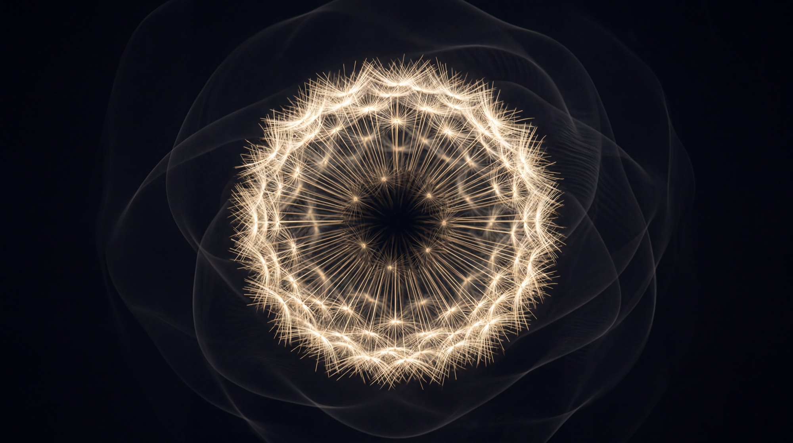

Apeiron Evolution Theory
Part I. Beyond Infinity. Before Measure.
- Author
- Frank Myonk
- Part I
- §1–6 · working version
- Part II
- §7–16 →
Contents
Introduction
Since the beginning of human civilization, the most awakened minds have asked one and the same question: when does everything begin?
Those who are content with the received answer say: God created the world. Those who see God in everything say: the world created itself. Those who search deeper sense that the two answers may not contradict each other. They point toward the same conclusion, but speak different languages.
I will not give you a final answer. Not because the question is unimportant, but because it is too large to be closed inside a single sentence.
I will give you a point of departure.
I am not a physicist. Nor am I an academic philosopher. I am a man with a mind open enough to stand between the two — between scientific thinking and metaphysical sensing; between the need for logic and the need for meaning; between the formula and the poem.
My answer unfolds in two narratives.
The first is metaphysical, philosophical-poetic and mythological. It is called Songs of the Universe. In it the beginning is not proven but lived — as image, as voice, as density before the first form.
The second is theoretical and analytical. It is titled Apeiron Evolution Theory. It does not claim to be proven physics, nor to replace the mathematical models of modern science. Its aim is different: to offer a philosophical framework rigorous enough to think about origin, and accessible enough to be understood beyond the narrow circle of specialists.
01
The Apeiron
Beyond the question “when,” there is eternity — no time.
Before “where,” there is everywhere — no space.
Before “what,” no thing exists yet — only the possibility of all things.
This is not absence.
It is fullness before division.
From the perspective of the visible universe, it appears as void.
From the logic of the All, the Apeiron is everything.
And precisely because it is both, it is neither one nor the other.
The Apeiron is a continuum of conditional points in endless hypothetical order.
Such a point is not a location in space, but a point of possibility.
It does not carry one definite state, but the potential of all states at once.
I call it P∞.
P∞ is not a number.
There are no numbers yet, because measure has not arisen.
The Apeiron is pre-measurable — not because it is too vast to be measured, but because the very possibility of measurement has not yet been determined.
All indeterminate P∞ cannot fully coincide.
Between them, therefore, there is constant difference.
So the Apeiron exists in ceaseless turbulence:
a self-sustaining difference that never comes to rest.
This is chaos —
but chaos without a medium to be stirred;
not the disorder of something,
but a difference that gives rise to itself.
{( P∞ ─ ΔP ─ P∞ )}∞ · timeless
apeironic turbulence
02
Threshold and Seed
Within the turbulence, every oscillation stands in relation to the others.
Not by distance.
Not by value.
But by resonance.
Most oscillations are disharmonious and dissolve back into turbulence.
Some enter harmony and begin to hold one another.
Where harmony holds, a set of P∞ gathers.
It does not stand alone.
One harmony holds the next;
the next holds the one after it;
and harmonization begins to spread.
So the Apeiron does not manifest all at once, nor everywhere.
It condenses in sets of harmonious P∞, held together by resonance.
Since we are speaking of absolute conditional notions, these cannot be understood as forces strong enough to propagate through the whole continuum.
They are gradients:
strong at the center of harmony,
weak at the periphery.
The loss of harmony is not an error.
It is a loss of apeironic resonance.
This is the small cycle:
P∞ ⟷ P∞ = ΔP × coefficient of resonance
the small cycle
Condensation accumulates quantity.
But manifestation is not only quantitative.
It gives rise to quality:
measurability.
And when quantity crosses into quality, a new reality appears.
This snap is the threshold of the measurable.
This emergence is the quantum seed.
03
The Quantum Seed
The quantum seed is a hybrid emergence.
It has its root in the apeironic turbulence,
and its peak in relative space.
The peak is the measurable face:
the manifested, that which carries value and position.
The root is the unmeasurable face:
remaining in the turbulence, it keeps superposition and coherence.
Not “particle and wave,” but one seed turned toward two realities —
one face exposed to measurement,
one face withdrawn into the Apeiron.
So the quantum is not the bottom of reality.
It is the stem between the two states.
Beyond it, we do not reach a smaller particle,
but another state of reality.
There are the conditional points of possibility, P∞, in their apeironic state.
If the seed must be seen, see a dandelion seed.
The root is not beneath it — it is inside it:
single, hidden, unmeasurable.
The manifestations are the pappus:
filaments cast in every direction,
each one catching the field,
each one conquering gravity.
They are light because they do not carry the seed —
they only manifest it outward.
One seed, many filaments.
One root, many addresses.
And there is no soil, because there is no below.
04
Relative Space and the Big Bang
The peak of the quantum seed surfaces chaotically —
a spontaneous manifestation of the apeironic turbulence.
In this sense every peak is a quantum fluctuation.
But here the fluctuation does not happen in space-time;
it precedes it:
precisely out of the multitude of chaotic peaks, the first “what relative to what” is born.
A single peak has no potential.
It has nowhere to be, because “here” demands “relative to what.”
When many peaks surface at different addresses, each has a relation to the others —
and from this, relative space is born.
It is not a vessel that the peaks enter.
It is the very network of relations between them.
Each transition from peak to peak carries direction and magnitude — a vector.
Since the peaks are many, the vectors are many:
time is not a single axis, but a field of vectors.
Here, at last, there is something to count:
one, two, three quanta; distance; earlier and later.
Measure is born together with the peaks.
But a beginning of the process cannot be pointed to.
The turbulence is unmeasurable and timeless — in it there is no “when.”
Time begins with manifestation, not before it.
So there is no instant at which everything set out:
there is nowhere from which to ask such a question.
The peaks do not stand alone.
The quanta interact, and since they differ in charge, the interaction accumulates qualitatively.
When the accumulation crosses a threshold, a new reality snaps into being.
We cannot speak of an explosion in space,
because space itself is part of what emerges.
What we call the Big Bang is not an explosion inside the cosmos.
It is the way accumulated manifestation appears
when read backward along our temporal vector.
Matter does not emerge as a single blast.
It condenses through relations, thresholds, and qualitative transitions.
If time has unfolded in one dominant direction,
then its earliest traces will converge for us
as the image of a primordial burst.
But this burst is not necessarily the event itself.
It is the shadow of emergence,
seen from within time.
Since we do not know how many dimensions there are, we may stake out two outcomes —
and both are valid with respect to the apeironic turbulence.
First, conservatively: the Big Bang is a local phenomenon, that is, not the only one.
Second, radically and mirroring the apeironic turbulence:
if we do not know how many dimensions there are — and we spoke of vectors in all directions —
then the Big Bang is a multidimensional phenomenon, and it may be parallel.
Our vector depends on where we are;
for us, at this moment, it lies in the past.
05
The Breath
As always, someone will ask:
and what was before the Apeiron?
But “before” is a word of the measurable state.
Every “before” that is asked falls inside another breath,
and the question never reaches an edge —
because there is no edge.
But there is a pulse.
Do not picture shells within shells;
that would return the vessel through the back door.
Picture breathing.
The measurable emerges from the Apeiron, mirrored, on the other side;
then Apeiron again;
and so without end.
Waves of a sea.
A pulse.
A breath.
An endless, self-sustaining cycle.
The cycles alternate only when seen from within.
Seen as a whole — and there is no outside to see from —
there is no sequence, because there is no master-time in which to alternate.
Time is born in every exhalation and dies with it.
The breath as a whole does not flow.
It is.
The second chapter named the small cycle.
This is the great one:
the self-sustaining difference that never comes to rest —
ΔP at the smallest scale, breath at the scale of the whole.
One property, two ends of the register.
{( Apeiron ⟷ measurable )}∞ · breath
the great cycle
And a final honesty.
The Apeiron itself is a working answer —
the floor of my asking, not necessarily the floor of reality.
Whatever stands deeper will not contain it,
for containment is spatial and arising is temporal.
It can only mirror it.
That door stays open.
06
Kinship and Difference
This framework is not alone in its direction.
Bohm’s implicate order —
an enfolded order out of which the explicit unfolds,
every region containing the whole.
Wheeler’s pregeometry —
the search for something before space.
The modern program of emergent spacetime,
where space is woven from relations of entanglement.
Causal sets,
which build spacetime out of pure order,
before any metric.
Leibniz against Newton:
space as a network of relations,
not a vessel.
Whitehead:
reality as a cascade of events,
not of things.
And Anaximander,
who is in the name itself.
But this framework stops before a different door.
In all these kindred directions,
mathematics remains close to the bottom —
Hilbert spaces,
bits of information,
discrete elements that can be counted:
measurable things already.
Even “it from bit” places information as the foundation.
Here the claim is different.
Number is not at the bottom;
number is born at the threshold.
The pre-measurable is not too fine to be measured —
it precedes the very possibility of measure.
That is why none of the kindred programs has an object like the quantum seed:
a hybrid with two faces in two states.
What often appears there as paradox,
here becomes anatomy.
And not by accident, one of the oldest formulas says:
In the beginning was the Word.
Not because language precedes reality as sound,
but because before measure there may be relation, naming, intelligibility —
the first gesture by which the unmeasured becomes thinkable.
This is the framework’s difference,
and its debt,
stated without ornament:
where the others pay in equations,
it pays in language.
If a mathematics of the pre-measurable is ever assembled,
it will be the payment of that debt.
Beyond infinity, before measure — the possibility from which the measurable is born.
- Edition
- Working version · §1–6
- First published
- Whispers of the Dreamer →
Next
Part II — Active Application